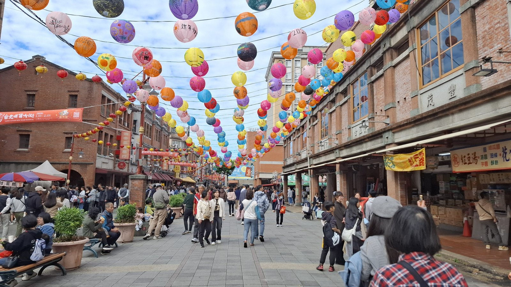

年貨大街倒數 6 天的半熟成迪化街
離「2026 台北年貨大街」（1/31–2/15）正式開張還差六天，街道上的彩繪燈籠陣與節慶紅布條已經高高掛起，各家商號與試吃攤商正準備暖場，卻還沒架滿遮雨棚——難得能同時看見整排巴洛克山牆與節慶燈海同框。

淡水河流域中文走讀｜2026/01/25（日）13:00–15:00
從捷運北門站出發，途經茶商公會、法主公廟、永樂市場與貴德街，最後收在新芳春茶行；記下年貨大街開鑼前六天的街景，也逐條核對現場的跳站與勘誤。
這場由國立臺北大學海山學研究中心主辦的週日午後走讀，原意是順著淡水河流域的水運與茶業脈絡，從北門一路踏查法主公廟、李春生紀念教堂、貴德街、永樂市場、霞海城隍廟與迪化街，最後收在新芳春茶行。實際上街的那一天，正好遇上2026 台北年貨大街開鑼前六天的搶先燈海、施工圍籬包緊的陳天來故居，以及巷口劇組封路拍片的臨場插曲；而面對導覽途中頻頻出現的史實錯置與跳站，這份筆記也將現場見聞與查證後的正確文史並列收錄。
路線本身經典，但時間點與城市施工讓這兩個小時留下幾格無法重拍的畫面
離「2026 台北年貨大街」（1/31–2/15）正式開張還差六天，街道上的彩繪燈籠陣與節慶紅布條已經高高掛起，各家商號與試吃攤商正準備暖場，卻還沒架滿遮雨棚——難得能同時看見整排巴洛克山牆與節慶燈海同框。
這天經過貴德街，市定古蹟陳天來故居（錦記茶行）整棟正被藍色工程圍籬包緊（現場公告預定 2026 年 4 月 4 日完工）；而從霞海城隍廟對面鑽進小巷時，正好撞見廣告劇組封巷取景，工作人員連聲喊著「兩分鐘就好」，全團只好臨機拐彎繞往另一條窄巷。
進到終點新芳春茶行時，因導覽員未佩帶志工證件、依館方規定不得使用擴音器，只能改以原聲簡短總結並交棒給三點整的定時導覽；而沿途臺北大學海山學研究中心夥伴隨行送出四輪有獎徵答小禮，還意外點出住在大溪大漢溪上游的學員。
前半段在地圖簡報與街頭停佇拉得較長，後半段因時間與人潮數度改道、略過多處原訂點位
原設計以三大主題串連十個經典地標，實際上鐵道部園區、臺北郵局、李春生教堂、霞海城隍廟與迪化街中北段都未深入造訪。
抵達永樂廣場前已過近一小時，考量年節採買人潮擁擠，臨時捨棄迪化街主街與城隍廟入內參拜，改從永樂二樓講完頂下郊拚後繞經貴德街，再沿民生西路直抵新芳春。
集合後並未走上地面參訪北門、臺博館鐵道部園區與臺北郵局，而是先在捷運站二號出口階梯旁站定，由導覽老師舉起平板秀出幾張北臺灣水系圖、古臺北盆地想像圖與清代輿圖，鋪陳「大稻埕為什麼成為外貿中心」。
在公路與鐵路尚未鋪設前，人員與貨物全靠水路流動。淡水河匯集上游山區的茶青，運到大稻埕精製後再順流從淡水港出海，加上後來劉銘傳興建清代鐵路，第一代臺北火車站（臺北火車碼頭）與清代臺北機器局就設在北門外與大稻埕南側邊緣之間；日後城市人口往東擴張，四代車站才一路向東遷移，把清代鐵道遺構留在北門站地下與玻璃地板之下。
過了市民大道，隊伍沿著延平北路往圓環方向步行。導覽員在街邊停下，用日治時期大稻埕街道圖對照眼前風景：過去商戶密布的延平北路與重慶北路（圖上的粉紅與橘色帶），多半已被都市更新的新建高樓取代，只有在長安西路與延平北路交叉口等角落，還能瞥見長著雜草的紅磚老屋殘影。
轉進甘谷街 24 號的台北市茶商業同業公會前，話題回到清末跨洋茶貿易的資金壓力：當年茶貨搭船送往歐美動輒壓上一季（三個月到半年），小茶商周轉吃緊，因此才有了整合行郊力量的「茶郊永和興」，並供奉護佑航運安全的「茶郊媽祖」。
走到南京西路一帶，透過窄巷遠遠望見黃瓦飛簷——那是守護福建安溪人與茶商的台北法主公廟（主祀張公法主）。1968 年南京西路拓寬時廟地遭徵收，後來重建成全臺罕見「一樓打通成巷道、二樓起才是廟殿」的空中廟宇，對聯仍留著「法主威靈鎮稻江」的守護意象。
走出巷口轉角，就是原天馬茶房門前的二二八事件引爆點紀念碑（南京西路 183 號前）。這天下午馬路車流不斷，團員就站在黃色計程車與白車擦身經過的紅磚道邊，聽導覽員輕率帶過 1947 年的緝菸衝突，對面還能望見保存良好的大千百貨舊樓與紅磚立面。
延平北路二段 31 號的義美食品門市，前身正是蔣渭水開設的大安醫院，隔壁則是啟迪臺灣新文化運動與近代公民意識的《臺灣民報》總批發處舊址。因本場以茶葉為主軸，此處未多停留。
轉入民樂街永樂市場側面，連續三家老字號青草茶緊鄰而立（包括創立於 1946 年的姚德和青草號）。假日午後還沒走到年貨大街，巷口早已飄滿藥草香與排隊買杯的遊客。
前身為日治「永樂町市場」，如今一樓為菜市場與常大排長龍的林合發油飯，二樓聚集布料商行，三樓提供訂製裁縫，高樓層（八、九樓）則是延續傳統戲曲文化的大稻埕戲苑。
抵達永樂市場時已經過了將近一小時，眼看一樓迪化街南段擠滿提前來辦年貨的遊客，老師決定不上迪化街主街逛店，改帶全團沿著室外樓梯上到比較安靜的永樂市場二樓紅磚走廊。對面正是外觀最醒目的「屈臣氏大藥房」（李俊啟創立於 1917 年，老師現場一度口誤唸成近似「君臣室」的字音），她指著山牆上方發起第二次有獎徵答：「這座註冊商標的寶塔有幾層？」答案是象徵商家發財吉祥的「八層」（不同於常見宗教九層塔）。
接著在走廊裡一口氣講完大稻埕崛起的關鍵歷史——發生於清咸豐三年（1853 年）的「頂下郊拚」：
佔據艋舺最繁榮的河港地盤（龍山寺一帶），信仰龍山寺觀音，經營布料、藥材與南北貨外貿。不滿同安人挑釁卻因沼澤阻隔無法渡船強攻，遂向安溪人借道。
聚居於八甲庄，同做布料與南北貨，信仰霞海城隍。戰敗後護送城隍金身北撤，先至大龍峒、再落腳當時仍為大片曬穀場的大稻埕，七年後竟搭上開港通商紅利翻身。
主要從事製茶與山產（與頂下郊較無直接利益衝突），祖廟為艋舺清水祖師廟。三邑人假道祖師廟越過沼澤突襲八甲庄，祖師廟也在衝突中焚毀，事後由三邑人出資重建。
下樓後原本經過霞海城隍廟對面，試吃叫賣聲此起彼落（老師原打算帶大家進廟內快速看一眼頂下郊拚殉難的「義勇公」牌位，卻又匆匆作罷）。一頭鑽進巷弄準備穿往貴德街時，巷口正好架起器材在拍廣告，劇組工作人員連忙致歉喊著「兩分鐘就好」，一行 18 人只好立刻左轉改走另一條窄巷繞道。
踏上貴德街（舊稱千秋街、建昌街）時，老師提醒大家注意腳下：這一排面向昔日淡水河碼頭的騎樓地基刻意比對街高出一截，是早年為了防止河水暴漲倒灌的防洪設計。站在騎樓下，她講起大稻埕茶業的黃金組合：英國茶商約翰・陶德（John Dodd）攜手精通英語的買辦李春生，收購三峽、坪林、瑞芳茶菁加以精製烘焙，在 1869 年將「Formosa Oolong Tea（福爾摩沙烏龍茶）」成功推上紐約拍賣市場。
可惜原訂進入李春生紀念教堂參觀的行程並未落實，僅在街邊帶過；路過一旁被整片藍色工程布幕包圍、無法入內的陳天來故居（錦記茶行）時，導覽員竟一度卡殼叫不出建築名稱（連喊五次「這是什麼宅…天台…」才接回「陳天來故居」），先說「修護遙遙無期」，隨後才看清現場公告寫著預定 2026 年（民國 115 年）4 月 4 日完工。因時間已逼近下午兩點五十分，她臨時徵詢大家同意後放棄迪化街中北段主街，直接轉進民生西路直奔終點，並在途中由海山學夥伴出第四題有獎徵答（蘇州太湖洞庭山碧螺春 vs. 三峽以「青心柑仔」製成的三峽碧螺春）。
在貴德街講述歐亞茶葉貿易前傳時，導覽員大幅離題談歐洲地理大發現與美國獨立史，出現多處明顯的歷史事實錯誤，整理如下：
走進新芳春茶行前，由於導覽老師當天未佩帶志工識別證，依館方規定在古蹟室內不能開啟麥克風。大夥圍在一樓大廳，聽她用原聲快步勾勒這座大稻埕現存規模最大的茶行格局，並提及 1869 年堪稱臺灣茶起飛的奇蹟年——蘇伊士運河通航與美國橫貫鐵路同年貫通，大幅縮短福爾摩沙烏龍茶運往歐美東岸的航程。
王芳群、王連河父子來自福建安溪，由父親在 1912 年創立「芳春茶行」，1934 年由兒子王連河在民生西路現址改名落成「新芳春茶行」——是一棟罕見「三開間、三進、三層樓」且夾有兩座天井的複合式洋樓街屋：
面向民生西路的臨街門市，當年用來接待茶商、洽談外銷訂單與總管帳務，騎樓與二樓以上家族起居相連。
穿過採光通風的第一座天井，中段曾作為粗製茶葉入庫堆放、揀梗與精製烘焙的工作空間。
最深處設有密集炭火焙籠間與製茶機具；戰後外銷轉衰後於 2004 年結束製茶，一度出租給傢俱行（鋪上木地板蓋住原磚地面），經市府修復後於 2016 年重新對外開放。
三點整館方定時導覽正好準備接手，這場兩個小時的走讀便在大廳自由參觀中畫下句點。
忠實紀錄當天的導覽表現，並附上全場關鍵錯置的逐條查證對照
從北門開場到法主公廟，導覽員多次強調自己「本身是英語導遊，講法不會太細節、很少講細節」，彷彿把受眾當作只需聽大方向故事的觀光客；每逢地方史脈絡、商號名稱或建築年代便含糊帶過，甚至現場忘記「茶郊永和興」與「陳天來故居」名稱。
短短兩小時內連續出現第一代車站位置誤植、第一次鴉片戰爭開港、李春生向神父學英文、日軍拆宅開路逃跑、天馬茶房與 228 脈絡失真、乾元行與永安堂混淆與剝皮寮蓮花池等錯誤，並不值得作為文史參考。
前段在北門站與世界史離題耗去過多時間，導致原訂亮點中的臺博館鐵道部園區僅以「臺北這個鐵道博物館園區」含糊帶過，臺北郵局、李春生教堂、霞海城隍廟與迪化街北中段亦未進或略過，後半段只能臨機改道民生西路趕往終點。
| 站點／主題 | 現場口述錯誤或含糊處 | 文史實況核對 |
|---|---|---|
| 北門・車站與鐵道部 | 稱第一代臺北火車站在大稻埕（又改指北門站）、誤稱民生西路重慶北路口有鐵軌，把機器局講成「機械局」，且將臺博館鐵道部園區含糊稱作「臺北這個鐵道博物館的一個園區」。 | 1891 年清代臺北火車碼頭在今鄭州路／塔城街／市民大道交界，屬大稻埕南緣與北門外之間；北門對面為國立臺灣博物館鐵道部園區（簡稱「鐵道部」，延平北路一段 2 號，清代為臺北機器局），與位於信義區市民大道五段 50 號（原臺北機廠）的國家鐵道博物館完全是不同地點與館舍。 |
| 北門・水系 | 稱臺北盆地主要河流只有 3 條，把「大漢溪」以流域在新北為由排除。 | 大漢溪與新店溪正是淡水河上游兩大主要源流，且兩者皆流經新北後匯入臺北盆地。 |
| 北門・古地圖 | 展示古圖時稱「雍正時代（康雍乾）」對臺灣的理解。 | 該圖幅源自清代《康熙臺灣輿圖》，成圖於康熙年間，並非雍正或嘉慶所繪。 |
| 甘谷街・茶商公會 | 忘記細節後稱茶商公會前身「就是最大的標會會頭、借貸放款機構」。 | 前身為同治／光緒年間「茶郊永和興」，主要職責是統一度量衡、制定茶市規章與排解紛爭。 |
| 天馬茶房・二二八 | 僅稱「查緝私菸、開槍、人拜拜了」，且錯稱「五十年前才有天馬茶房」，未提 2/27 與 2/28 差異。 | 2/27 在天馬茶房（1941 年創）前打傷林江邁、誤殺陳文溪；2/28 市民遊行至城內重慶南路專賣局臺北分局（原辰馬商會本町店鋪）抗議，再赴長官公署請願遭機槍掃射。 |
| 永樂市場・行銷史 | 稱迪化街「乾元行」老闆賣虎標萬金油送《火燒紅蓮寺》電影票（稱共三集）。 | 虎標萬金油屬胡文虎「永安堂」，與乾元參藥行無關；《火燒紅蓮寺》當年連拍 18 集。 |
| 永樂二樓・頂下郊拚 | 稱隔開三邑與同安人的蓮花池在「剝皮寮」，並稱 1980 茶業沒落因「退出聯合國」。 | 大沼池在龍山寺北側／貴陽街一帶（非剝皮寮）；戰後茶業轉衰主因為工資、匯率、國際競爭與內銷轉型。 |
| 貴德街・臺灣開港 | 稱「第一次鴉片戰爭之後，臺灣就開港通商了」。 | 臺灣開港（1860 年）源自第二次鴉片戰爭（英法聯軍）之《天津條約》《北京條約》。 |
| 貴德街・李春生 | 稱李春生在教會向「神父」學英文，且故居被日軍拆掉「開逃跑路線回日本」。 | 李春生為基督新教（長老教會）信徒，受教於宣教師／牧師；戰末拆屋屬防止空襲延燒的「防空疏開」。 |